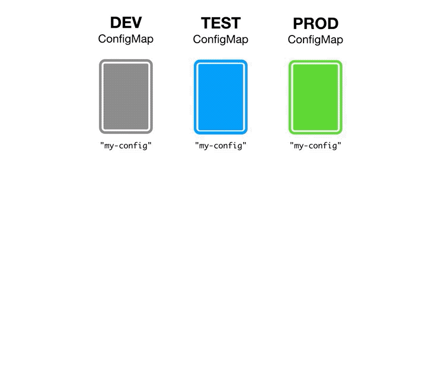

許多玩容器化的人均會面臨到「如何將環境變數設定」映射到應用程式內，因應目的不同多個環境(Dev、UAT、PROD等)該怎配置?，這邊手頭上目前碰到的組合.NET Core 6 + Azure DevOps CD + AKS 來說明
k8s要設定環境變數絕對會看過兩個配置：ConfigMaps、Secrets，這兩項還不是很清楚也可以參考官方對於configmap和secrets的解說，以下為一張運用場景圖

在開發角度很常如圖這樣設定變數，像是DB Connection也會在appsettings.XXX.json其中(擷取其中一段)

1
2
3
4
5
6
7
|
"ConnectionStrings": {
"Identity": "server=xxxxxxxxx;port=3306;database=xxxxxx;uid={userid};pwd={password};sslmode=Preferred"
},
"Identity": {
"UserId": "xxxxxx",
"Password": "xxxxxxxx"
},
|
但如果透過CD又佈署到環境該如何依照所屬環境參考變數?
在CD過程中會將image 透過yaml撰寫佈署描述來執行(Deployments、ReplicaSet等)，而在其中會有定義環境參考的敘述
1
2
3
4
5
6
7
8
9
10
11
12
13
14
15
16
17
18
19
20
21
22
23
24
25
26
27
28
29
30
31
32
33
34
35
36
37
38
39
40
41
|
identity/deployment.yaml
apiVersion: apps/v1
kind: Deployment
metadata:
name: identity
labels:
app: identity
namespace: auth
spec:
replicas: 1
selector:
matchLabels:
app: identity
template:
metadata:
labels:
app: identity
spec:
containers:
- name: identity
image: xxx/identity:latest
ports:
- containerPort: 80
env:
- name: ConnectionStrings__Identity
valueFrom:
configMapKeyRef:
name: xxx-configs
key: db.connection
- name: Identity__Password
valueFrom:
secretKeyRef:
name: xxx-secret
key: db.password
- name: Identity__UserId
valueFrom:
secretKeyRef:
name: xxx-secret
key: db.username
|
會看到env區塊有與在程式端環境設定檔相似的變數參照，而configMapKeyRef和secretKeyRef敘述則為k8s環境中變數實際的名稱和對應映射Key，但這邊設定完先確認k8s上是否設定ConfigMap和Secret了沒，不然可能因為k8s上還沒設定ConfigMap和Secret而參照不到失敗!
首先我們要準備兩份yaml檔，各別為ConfigMap和Secret，並設定到k8s
ConfigMap
1
2
3
4
5
6
7
8
|
apiVersion: v1
kind: ConfigMap
metadata:
name: xxx-configs
namespace: auth
data:
db.connection: >-
server=xxxxx;port=3306;database=xxxx;uid={userid};pwd={password};sslmode=Preferred
|
Secret
1
2
3
4
5
6
7
8
9
|
apiVersion: v1
kind: Secret
metadata:
name: xxx-secret
namespace: auth
type: Opaque
data:
db.password: dGVzdA==
db.username: dGVzdDEyMzQ=
|
Kubernetes.io
以上完成就可以享受設定的成果~